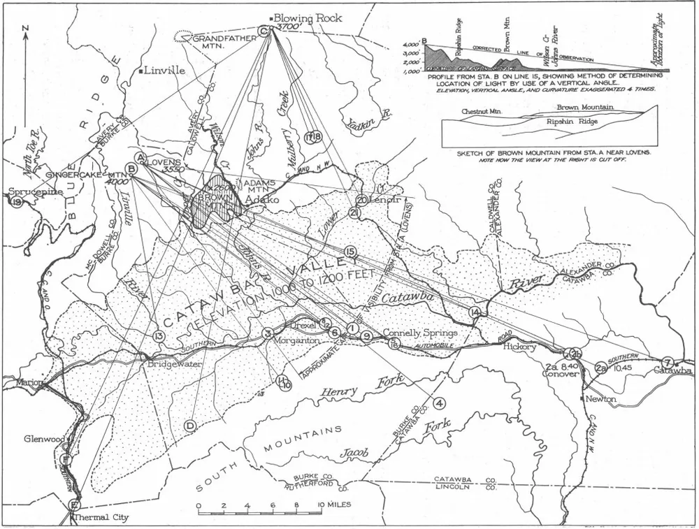
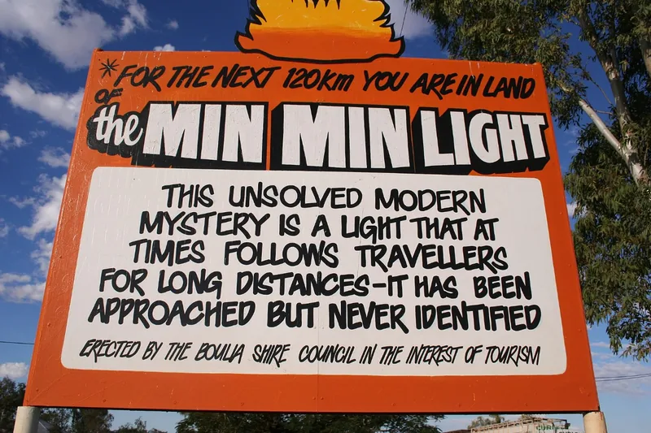
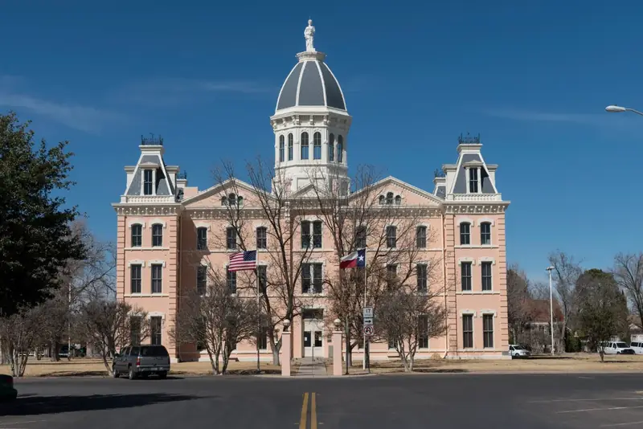

"Ellison saw the lights in 1883."
It is on the 1988 marker and in the Handbook of Texas, and his family remembers it. His own 1937 memoir doesn't mention the lights.6,11
For more than a century, people have watched a light over the flat southeast of Marfa. Cowhands took it for a campfire, soldiers feared it, a town built a festival around it, and physicists brought instruments to it. This page follows the story from campfire tales to cameras, and tells you honestly which parts are record and which are legend.
A young cowhand named Robert Reed Ellison is driving cattle across the flat when he sees a light flickering to the south. He wonders if it is an Apache campfire.1
That is how the story is almost always told, on the historical marker, in the Handbook of Texas, and in countless articles since.11 But when his granddaughter searched Ellison's own memoir, written in 1937, she found nothing about the lights at all. The earliest written story anyone has found is a San Angelo Times piece from February 1945: "Ghost Light Appears in Marfa Area."6
The legend is older than its paper trail. That is where this story starts.
The earliest tales speak of a single light, not the dancing groups described today.6
The 1988 state historical marker says scholars have recorded "over seventy-five local folk tales" about them.11

The same ten claims turn up in almost every account of the Marfa Lights. Here is what we could and couldn't find behind each one.
It is on the 1988 marker and in the Handbook of Texas, and his family remembers it. His own 1937 memoir doesn't mention the lights.6,11
It is on the Viewing Area's marker and repeated widely. We found no ethnographic record behind it, and no documented Indigenous tradition about the lights at all.12
Alsate was a real Chisos Apache leader, executed at Ojinaga in the early 1880s. Shepherds later said his ghost haunted the Chisos Mountains.4,9 The ghost story reached print from a rancher's grandson. The rancher heard it from a Mexican guide, who had it from "the Indians."6 A separate legend says the Chisos Mountains are named for his ghost.29
The Handbook of Texas records aerial searches during the Second World War. We found no military record of them, and the Handbook names the wrong air field.1,3
This is a favourite story about the famous Big Bend rancher and writer. We found it only on a fan wiki and a personal website. Her Handbook of Texas biography doesn't mention the lights.31
Mrs. W. T. Giddings said her father was led to the shelter of a cave by the lights. She called them curious observers.1
It is repeated in the Handbook and on the Viewing Area marker, but we found no early source.1,12 Lights guarding buried treasure are a common motif in Texas folklore. J. Frank Dobie recorded several such tales, though not from the Big Bend.32
A 1984 Texas Monthly round-up lists all of these. Other suggestions include a Chisos Apache warrior sealed in a cave to guard stolen gold, and luminescent brush on a jackrabbit's fur.10
Many lights seen from the platform are cars on US-67. Field studies and our own photos show it.7 But the stories go back before cars, and careful observers still log lights that don't fit.6,8 Headlights explain a great deal, but not yet everything.
The Handbook of Texas credits Marfa Strogoff in Jules Verne's Michael Strogoff, suggested by a railroad executive's wife.15 Dostoevsky's novel wasn't translated into English until 1912, decades after the town was named in the early 1880s.16
Marfa is not alone. Several places have a famous light that appears over open country, and some have had serious investigations. Their outcomes are a useful guide to what careful work can and can't settle.

The U.S. Geological Survey was asked to investigate twice. In 1913, D. B. Sterrett concluded the lights were locomotive headlights seen over the mountain. In 1922, George Rogers Mansfield took instrument readings on seven evenings. He attributed 47% of the lights he could study to car headlights, 33% to locomotive headlights, and 10% each to fixed lights and brush fires.25
For Marfa: His map (above) triangulates each light with sight lines drawn from known points. It is the same idea as our own ray fan, a century earlier.
Map: G. R. Mansfield, USGS Circular 646, via Wikimedia Commons, public domain.
In 2010, optics students at Michigan Tech watched the light through a telescope while a teammate logged traffic on US-45, about 4.5 miles away. Every time the light appeared, a car had just passed that spot. A test drive with hazard lights reproduced it.26
For Marfa: Timing a light against traffic on a known road is the simplest decisive test. The app's log and the report form are built so that visitors can do it.

Outback travellers have long described a light that follows them across the plains. In 2003, neuroscientist Jack Pettigrew explained it as an inverted mirage: a cold layer of air near the ground carries light far beyond the horizon. On a still evening after a hot day, six observers watched a car 10 km away, below their line of sight, appear as a light floating above the horizon.27
For Marfa: Cold air pools over the flat on calm nights, too. This is why our model tests every light for refraction up to a strong inversion.
Photo: gondwananet.com, 2006, via Wikimedia Commons, CC BY-SA 3.0, resized.
Lights in a remote Norwegian valley drew a research project in 1983 and a winter field campaign in 1984, which recorded 53 events with cameras, radar and other instruments. Since 1998 an automatic station has watched the valley.28 A 2016 survey article noted that the energy source behind the lights "remains completely unknown."28
For Marfa: Hessdalen shows what it takes to establish a genuine anomaly: years of instrument records, not stories. That is the standard our field work aims for.
The history explains why the question never closes. The stories are older than cars on these roads, so "it's just headlights" never fully satisfied anyone. But the written record is thin, late and short on detail, so it can't settle anything either. What has always been missing is careful, timed, located observations. That is the gap a modern log can fill. See Visiting, or use the app.
